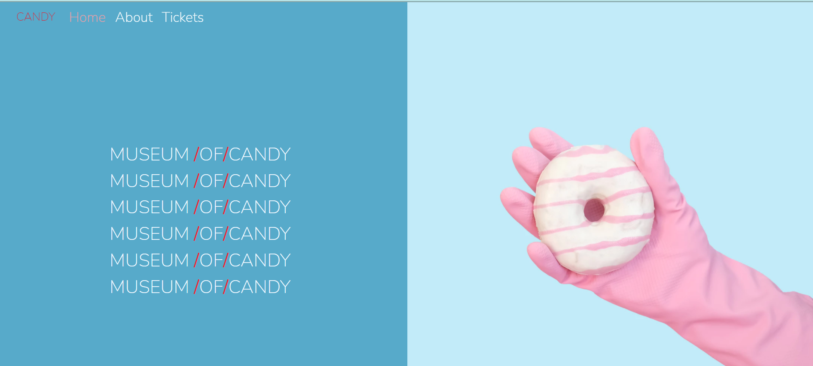
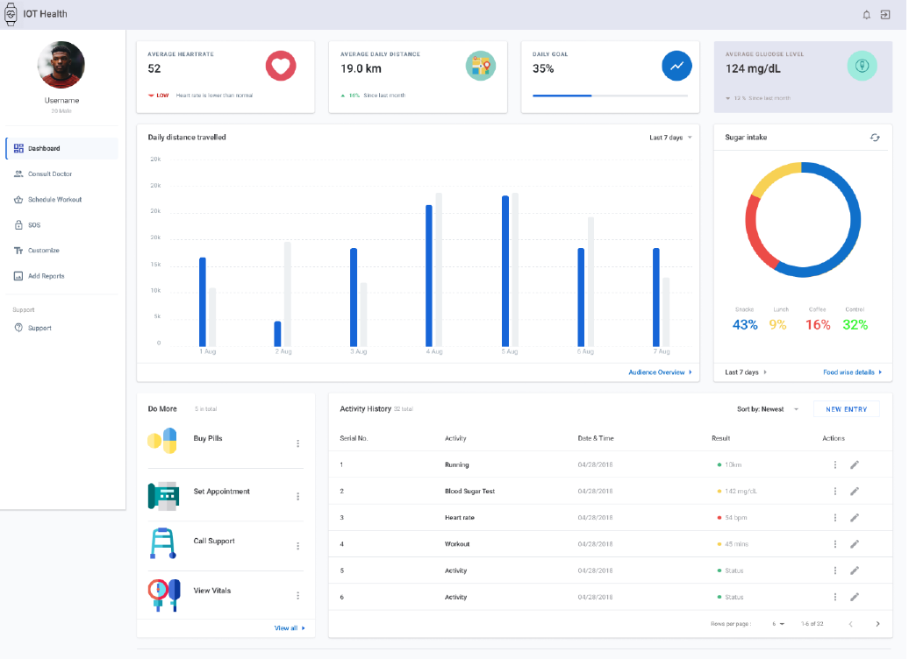
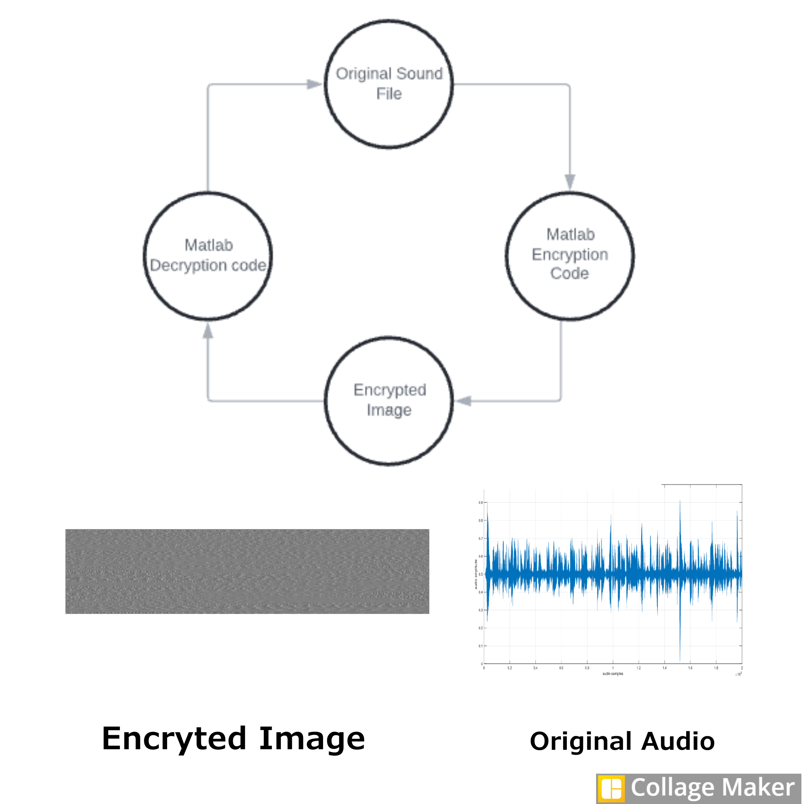

Smart Waste Tracking and Efficient Mobilization(SWATEM). This project is aimed to
help in efficiently collect waste in major cities. This system Consist of a a Smart
garbage bin which will habdle wate management and a mobile application which will assist in the
process of timely waste collect (for garbage Collectors).
Working Pricipal: The smart garbage bins (that continuously records the garbage amount)
which
interact with the cloud, along with a dedicated app for garbage collection (which gets the data
from the cloud and shows the status of the bins in a visual form) would enable us to address the
problem of improper waste management and disposal efficiently and effectively.
Technology Stack : Kotlin, NodeMCU, Google FireBase

This is a Responsive webpage for a exhibition of Candies. this website enable us to
Book tickets
Technology Stack: HTML, CSS, JavaScript, BootStrap 5.1

This is a simple web Application wizard used to Count Scores in Ping Pong
Technology Stack: CSS, HTML, JavaScript, Bulma

This project is developed with an aim to enable remote monitoring of Health
with a help of a web application a smart wirst band capable of monitoring
Temperature, Heartrate, Blood Sugar and daily activity.
Component Used:
BJT, resistor, capacitor, mic
Tachnology Stack: Firebase Cloud, HTML, CSS, JavaScript, C++
Project 5
House price prediction with Random Forest Algorithm

The data used is a open source data from Kaggle containing 79 features and 1461 entries. features
with less correlation
to the house price is dropped. Finally a random Forest algorithm is applied to the remaining
features and an accuracy of 89.03%
Principal used: Random Forest algorithm, Python

This project is aimed to detect landslide in advance giving people time to move in to
secure locations. This is achieved by installing the edge nodes in landslide prone areas
which montor the soil stablity with the help of parameters like vibration, moisture and
finally
the alert is send to local fire department with the help of GSM module, and local people are
alerted by an alarm.
Including this the data can be monitored remotely with the help of web Application.
Technology Stack: Node MCU, Arduino, GSM module, Thingspeak Cloud, C++

The Encryption program takes an original audio file and convers them in to a greyScle Image
and the decryption algorithm is run on the image file and original audio is obtained.
Applications:
1. Can be used in army for secure transmission
2. Can be used in messaging application to transmit audio recordings